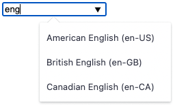
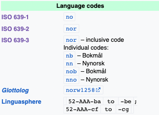

class: center, middle # Existing standards for representing languages & countries in the Internet <!-- # Existing standards for country & language codes --> ### Daniel Staśczak Made with <https://github.com/gnab/remark> ??? - This will be mostly in the context of working w/ internalization… - … because that's the context where I learned about all of this recently. --- # Devtalk challenge by Mateusz Wójcik, Marcin Tubisz, Przemysław Grzeszczak. --- # Devtalk challenge, cont. ### What is it? - A long-term mini-hackathon connected with a devtalk's topic. - Create a solution for any problem connected with the current topic—**Existing standards for representing languages & countries in the Internet**. The sky is the limit! -- ### Rules - **Duration?** 1 month. - **Who?** Individually or in a group. - **How to participate?** Register team on Slack—`#devtalk-challenge`. - **Presentation?** 2023-03-27 16:00 Devtalk Challenge Teams Presentation. - **Rating?** TBD in the next few days but a similar form to the regular hackathon. - **Who can rate?** Everyone! - **Prices?** 200 Sparky points per participant + big mystery prices for best solutions! --- # Devtalk challenge, cont. If you have any questions feel free to ask on the `#devtalk-challenge`. --- # What will you learn? 1. Why there's so many standards and what are the basic differences between them. -- 1. The difference between `en` and `en-us`, `en-gb`, `en-au` .small[(~~the last one is upside down~~)]. 1. The difference between `en-us` and `en-US` and `EN-US` and `en_US` 🤯. 1. The difference between `zh-cn` and `zh-Hans` (representation for the Simplified Chinese, kind of). 1. If `eng` is even a valid language code. -- 1. Tricky things that you should watch out for while working with language codes. -- 1. Why country name or flag emoji are _not_ a good indicator of the language. 1. Why you shouldn't allow users to define an arbitrary named locales in the app. ??? - why some apps use `en`, while others use more specific `en-us`/`en-gb`/`en-au`/etc - what's the difference between 5 characters `zh-cn` and 6 characters `zh-Hans` (both signify Simplified Chinese, kind of) - why there's so many standards for languages and what are the basic differences between them - if `eng` is even a valid language code - what are some tricky things that you should watch out for while working with language codes - why country name or flag emoji are _not_ a good indicator of the language - why you should never allow users to define an arbitrary named locales in the app or I will be very very sad --- # Why? - Because I've spent a _lot_ of time to research that. - There is a lot of non-obvious details and good/bad practices. - That's a pretty interesting topic! 🤓 --- # Some extra context - I was working on the DeepL.footnote-char[¹] API integration. - This is like the Google Translate… - … but AI-powered. - Great for longer text—articles, essays~~, and any other homework~~. .footnote[ .footnote-char[¹]<https://www.deepl.com/translator> ] --- # ISO 639 - A set of standards for representing **languages**. - Created by the _International Organization for Standardization_. - The first, currently withdrawn edition is from 1967. - Defines standards from ISO 639-1 to ISO 639-6.footnote-char[¹]. .footnote[ .footnote-char[¹]ISO 369-6 was withdrawn, though. ] --- # ISO 639-1 AKA Alpha-2 codes Two-letter codes, e.g.: - `en` (English). - `pl` (Polish). - `de` (German). -- This also includes some less widely-known languages, e.g.: - `se` (Northern Sami). - `sa` (Sanskrit, an ancient language). -- Can we use it to define a regional variant of a language, e.g. American or British English? -- **No**. --- # ISO 639-2 AKA Alpha-3 codes Three-letter codes, e.g.: - `eng` (English). - `pol` (Polish). -- It splits into: - ISO 639-2/B (bibliographic code), derived from the English name of a language, e.g.: - `ger` (German). - `fre` (French). -- - ISO 639-2/T (terminological code), derived from the native name of a language, e.g.: - `deu` (German). - `fra` (French). -- ISO 639-2/T resembles the respective code of ISO 639-1 and **is favored**. --- # ISO 639-3 Three-letter codes. It extends the ISO 639-2 with an aim to cover all known natural languages, e.g.: - `ase` (American Sign Language). However, it is _not_ a superset of ISO 639-2 (it misses language collections and bibliographic codes). --- # ISO 639-4 and 639-5 - ISO 639-4 covers implementation guidelines and general principles for language coding. - ISO 639-5 defines Alpha-3 codes for (a tiny portion of) language families and groups. --- # Case-sensitivity > ISO 639-2 recommends use of the language codes in lower case, but they should be considered case-insensitive and are unique codes regardless of case. > > —<cite><https://www.loc.gov/standards/iso639-2/faq.html#21></cite> Therefore, `en == En == EN`, although we should use `en`. -- **Note**: remember to use `CIText` field in `Django` for that, then! --- # A quick summary .pure-table.pure-table-bordered.pure-table-striped[ Language name | ISO 639-1 | ISO 639-2/B | ISO 639-2/T | ISO 639-3 - | - | - | - | - English | `en` | `eng` | `eng` | `eng` Polish | `pl` | `pol` | `pol` | `pol` German | `de` | `ger` | `deu` | `deu` French | `fr` | `fra` | `fre` | `fre` American Sign Language | - | - | - | `ase` Kashubian | - | - | `csb` | `csb` Upper Silesian | - | - | - | `szl` ] Which one should be preferred? -- **Difficult to say**. --- # ISO 3166-1 - A standard for representing **countries and their subdivisions**. - Created by the _International Organization for Standardization_. - The first edition is from 1974. -- .pure-table.pure-table-bordered.pure-table-striped[ Country name | Alpha-2 code | Alpha-3 code - | - | - United States of America | US | USA Poland | PL | POL Germany | DE | DEU France | FR | FRA Virgin Islands (British) | VG | VGB Virgin Islands (U.S.) | VI | VIR ] --- # Case-sensitivity I wasn't able to find an info if these are case-sensitive or not, even on the official site.footnote-char[¹] 😔 I will go back to that topic later, though… .footnote[ .footnote-char[¹]<https://www.iso.org/iso-3166-country-codes.html> ] --- # ISO 15924 - A standard for representing **scripts** (writing systems). - Maintained by the Unicode Consortium. - The first edition is from 2004. - Four-letter codes. - Where possible, derived from ISO 639-2 (surprisingly, preference is given to the bibliographical codes). -- .pure-table.pure-table-bordered.pure-table-striped[ ISO formal name | Code - | - | - Latin | Latn Cyrillic | Cyrl Arabic | Arab Emoji | Zsye Mathematical notation | Zmth ] --- # Case-sensitivity I wasn't able to find an info if there are case-sensitive or not, even on the official site.footnote-char[¹] 😔 I will go back to that topic later, though… .footnote[ .footnote-char[¹]<https://unicode.org/iso15924/> ] --- # IETF language tag AKA BCP 47 - A standard for representing **human languages in the Internet**. - Created by the _Internet Engineering Task Force_ and maintained by the _IANA Language Subtag Registry_. - Combines all of the previous standards. - Composed of one or more subtags separated by hyphens (`-`). --- # e.g. .pure-table.pure-table-bordered.pure-table-striped[ Language | IETF language tag - | - American English | en-US British English | en-GB Australian English | en-AU European Portuguese | pt-PT Native language of @dcapeletti | pt-BR Serbian written in the Cyrillic | sr-Cyrl Serbian written in the Latin | sr-Latn Zürich German | gsw-u-sd-chzh ] --- # Case-sensitivity > Subtags are not case-sensitive, but the specification recommends using the same case as in the Language Subtag Registry, where region subtags are UPPERCASE, script subtags are Title Case, and all other subtags are lowercase. > > —<cite><https://en.wikipedia.org/wiki/IETF_language_tag#Syntax_of_language_tags></cite> Therefore, `en-us == En-uS == EN-US`, although we should use `en-US`. --- # Language Subtag Registry <https://www.iana.org/assignments/language-subtag-registry/language-subtag-registry> ```ini File-Date: 2023-02-14 %% Type: language Subtag: pl Description: Polish Added: 2005-10-16 Suppress-Script: Latn %% Type: region Subtag: PL Description: Poland Added: 2005-10-16 %% Type: script Subtag: Latn Description: Latin Added: 2005-10-16 ``` --- # Hyphen or underscore? > The BCP 47 documents actually do specify the `en-US` format […]. But in practice you'll see the form with the underbar quite a bit. For example, both Java and most POSIX-type platforms use the underbar […]. > > —<https://stackoverflow.com/a/4904814/5875021> ```shell $ locale LANG="en_US.UTF-8" … ``` -- **Opinion**: You can use hyphen if you don't have some peculiar use-case. --- class: center, middle # Easy, right? --- class: center, middle # Ha. Ha. Let's talk about good practices! --- # Chinese simplified vs. traditional -- .left-column[ Simplified Chinese can be represented as: - `zh-CN`. - `zh-Hans`. `zh` -> Chinese `CN` -> China `Hans` -> Han script (simplified variant) ] -- .right-column[ Traditional Chinese can be represented as: - `zh-TW`. - `zh-Hant`. `zh` -> Chinese `TW` -> Taiwan `Hant` -> Han script (traditional variant) ] --- # Chinese simplified vs. traditional, cont. > When the difference is one of script or script variety […] it should be expressed with a script subtag instead of a region subtag; > > —<https://en.wikipedia.org/wiki/IETF_language_tag#ISO_3166-1_and_UN_M.49> **The preferred are `zh-Hans` and `zh-Hant`.** --- # Algerian Arabic Can be represented as: - `ar-DZ`. - `arq`. `ar` -> Arabic `DZ` -> Algeria `arq` -> Algerian Arabic (in ISO 639-3) --- # Algerian Arabic, cont. > When a distinct language subtag exists for a language that could be considered a regional variety, it is often preferable to use the more specific subtag instead of a language-region combination. > > —<https://en.wikipedia.org/wiki/IETF_language_tag#ISO_3166-1_and_UN_M.49> **The preferred is `arq`.** --- # Not so easy anymore, right? > There are only two hard things in Computer Science: cache invalidation and naming things. > > —Phil Karlton --- # Not so easy anymore, right? > There are only **four** hard things in Computer Science: cache invalidation and naming things **and timezones.footnote-char[¹] and internalization**. > > —Daniel Staśczak .footnote[ .footnote-char[¹]That's a topic for a completely different devtalk, tho… ] --- # Let's recap! 1. The difference between `en` and `en-us`, `en-gb`, `en-au` .small[(~~the last one is upside down~~)]. -- 1. The difference between `en-us` and `en-US` and `EN-US` and `en_US` 🤯. -- 1. The difference between `zh-cn` and `zh-Hans` (representation for the Simplified Chinese, kind of). -- 1. If `eng` is even a valid language code. ??? Is `eng` a valid language code? --- # Example of a real-world application ## DeepL API -- ```python import deepl translator = deepl.Translator(auth_key) result = translator.translate_text( "Hello, world!", target_lang="fr", ) # OR result = translator.translate_text( "Hello, world!", source_lang="en", target_lang="fr" ) ``` --- # Example of a real-world application ## DeepL API, cont. ```python result = translator.translate_text( "Hallo Verden!", source_lang="no", # Norwegian target_lang="en" ) … DeepLException: Bad request, message: ↪ Value for 'source_lang' not supported. ``` --- # Example of a real-world application ## DeepL API, cont. ```python result = translator.translate_text( "Hello, world!", source_lang="en", target_lang="no" # Norwegian ) … DeepLException: Bad request, message: ↪ Value for 'target_lang' not supported. ``` --- # Example of a real-world application ## DeepL API, cont. It differentiates between source and target languages. --- # Example of a real-world application ## DeepL API, cont. Source languages: ```python Language(code='PL', name='Polish'), Language(code='EN', name='English'), Language(code='PT', name='Portuguese'), … ``` All of these are UPPERCASE.footnote-char[¹] ISO 639-1. .footnote[ .footnote-char[¹]It accepts codes in a case-insensitive manner, though. ] --- # Example of a real-world application ## DeepL API, cont. Target languages: ```python Language(code='DE', name='German'), Language(code='EN-GB', name='English (British)'), Language(code='EN-US', name='English (American)'), Language(code='PT-BR', name='Portuguese (Brazilian)'), Language(code='PT-PT', name='Portuguese (European)'), ``` Mix of UPPERCASE.footnote-char[¹] ISO 639-1 and UPPERCASE.footnote-char[¹] IETF 😐 .footnote[ .footnote-char[¹]It accepts codes in a case-insensitive manner, though. ] --- # Example of a real-world application ## DeepL API, cont. ```python result = translator.translate_text( "Hello, world!", source_lang="en", target_lang="pt" # Portuguese ) … DeepLException: target_lang="PT" is deprecated, ↪ please use "PT-PT" or "PT-BR"instead. ``` --- # Example of a real-world application ## DeepL API, cont. - No support for translating from British to American English or vice versa. - Requires explicit regional target language if regional variants are supported. - Returns UPPERCASE codes, who knows why. - Does not support underscore (`_`), though! ??? - The official doc does not mention case-insensitivity. - If you work one such API… --- # Using flag emoji to indicate a language 🇵🇱 -> Poland -> Polish (`pl`)? -- 🇺🇸 -> USA -> English (`en`) or American English (`en-US`)? -- 🇬🇧 -> Great Britain -> English (`en`) or British English (`en-GB`)? Does that include Scottish, Welsh, and Irish English too, or not? -- 🇨🇦 -> Canada -> English (`en`) or Canadian English (`en-CA`) or French (`fr` ) or Canadian French (`fr-CA`)? -- 🇨🇳 -> China -> Chinese (`zh` ) or Simplified Chinese (`zh-Hans`) or Traditional Chinese (`zh-Hant`) or some other variant… ? --- # Allowing users to define locale by themselves -- The problem we want to solve: In our CMS, we want to allow users to define an arbitrary locales they want to support in their apps. -- Users should be able to define a (display) name for the front-end and a clear identifier for the public API. -- There's a lot of languages in the world, so we need to provide enough flexibility to the users. -- Okay then, let's allow the user to define a locale as: ```python class Locale: name: str # an arbitrary string code: str # an arbitrary string ``` --- # Allowing users to define locale by themselves, cont. What can go wrong? -- This can lead to `Locale(name="Swedish", code="se")`, which is not true (`se` is Northern Sami). -- Or `Locale(name="American English", code="usa-en")`, which is not a valid IETF tag. -- Or `Locale(name="English", code="en")`, good luck with guessing if that's supposed to be American or British English! -- Or `Locale(name="Chinese", code="zh")`, good luck with guessing if that's supposed to be Simplified or Traditional Chinese! Or `Locale(name="🇨🇳", code="zh")`, the same as above. -- **Yes, this is a real-world data**. --- # Allowing users to define locale by themselves, cont. What to do instead? -- **Validate the user's input**, obviously. Provide a full list of languages (both names and _valid_ IETF codes) that the user have to _choose from_. .left[] To preserve the flexibility, allow the user to define an optional display name. For the public API, just use a lower-case IETF code (e.g. `en-us`)—it's URL-safe. --- # Let's recap! 1. Why country name or flag emoji are _not_ a good indicator of the language. -- 1. Why you shouldn't allow users to define an arbitrary named locales in the app. --- # Further resources - <https://www.loc.gov/standards/iso639-2/faq.html> - <https://isthisarabic.com/> - <https://en.wikipedia.org/wiki/IETF_language_tag> - <https://github.com/rspeer/langcodes> - Search "`<name> language`" on <https://en.wikipedia.org/>, e.g. "`Norwegian language`" .left[] --- # Further resources, cont. - <https://babel.pocoo.org/en/latest/> ```python list((k, v) for k, v in babel.languages.get_territory_language_info('PL').items() )[:3] [ ('pl', { 'population_percent': 96.0, 'official_status': 'official', }), ('en', { 'population_percent': 33.0, 'official_status': None, }), ('de', { 'population_percent': 19.0, 'official_status': 'official_regional', }), ] ``` ??? Babel is an integrated collection of utilities that assist in internationalizing and localizing Python applications, with an emphasis on web-based applications. --- # Further resources, cont. - <https://babel.pocoo.org/en/latest/> ```python list((k, v) for k, v in babel.languages.get_territory_language_info('CN').items() )[:3] [ ('zh', { 'population_percent': 90.0, 'official_status': 'official', }), ('wuu', { 'population_percent': 6.0, 'official_status': None }), ('yue_Hans', { 'population_percent': 5.2, 'official_status': None }), ] ``` --- class: center, middle # Any questions? --- class: center, middle # Thank you for your time! 💚